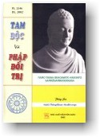

|
BuddhaSasana Home Page |
Vietnamese, with Unicode Times font |
|  |
THERAVADA TAM ĐỘC VÀ PHÁP ĐỐI TRỊ MAHA THONGKHAM MEDHIVONGS Chùa Kỳ
Viên tái bản |
-ooOoo- LỜI TỰA Phần đông người đời chỉ biết lo vấn đề sanh sống, ít ngưòi nghĩ đến việc sửa đổi tâm tính và tìm sự an vui cho tinh thần về ngày vị lai. Vì thế đời sống của con người chìm đắm trong uất hận đau khổ và nóng nảy. Con người bị một chứng bệnh nan y, là phiền não khuấy nhiễu. Một khi con nguời biết đó là một tâm bệnh, thì nên mau tìm phương pháp chữa trị. Phương pháp chữa trị hay nhất là lời Phật dạy. Khi người ta thực hành theo lời Phật dạy thì mặc dầu đang sống trong biển phiền não nhưng cũng được thung dung tự tại. Nói đến an vui hay là hạnh phúc, thì ai ai cũng ưa thích và mong muốn. Nhưng hạnh phúc của các tuổi thanh niên, trung niên và lão niên có khác nhau. Vậy khi trải qua ba giai đoạn ấy, ta làm thế nào tạo cho ta ít lắm cũng được hạnh phúc trong một thời kỳ. Đây là một vấn đề mà người muốn tìm hạnh phúc cho bản thân mình nên xét cho kỹ, học cho rõ để tự tìm lấy cho mình. Phần nhiều người muốn tìm lấy hạnh phúc hiện tại và cho thể xác mà thôi. Vì người ta không cần nghĩ tới hạnh phúc của vị lai và của tinh thần. Đức Thế Tôn biết rõ tâm lý của chúng sanh chỉ thích hiện tại và thể xác, nên Ngài không nài cực nhọc cố gắng mở đạo dạy đời; dạy người tìm hạnh phúc cho hiện tại cũng như tương lai, và cả cho thể xác lẫn tinh thần. Vậy hiện nay chúng ta có nhiều duyên lành được sanh lại làm người có đầy đủ trí khôn và được gặp Phật-Pháp, chúng ta hãy thừa cơ hội rất tốt, là lo học tiểu Phật-Pháp để hành theo hầu tiêu diệt phiền não và giải thoát. Nếu ta không có diệt trừ phiền não và không giải thoát khỏi phiền não, thì không bao giờ ta gặp được hạnh phúc thật sự, nghĩa là hạnh phúc không còn lẫn với phiền não và không còn luân hồi trong bể khổ nữa. Đức Thế Tôn dạy rất rành về các phương pháp ngăn đón và diệt trừ phiền não, nhưng tiếc vì chúng ta không học chu đáo và thực hành theo dạy bảo của Ngài. Đức Thế Tôn không dạy riêng cho một hạng tuổi nào hay một giai cấp nào trong đời này, mà Ngài dạy chung cho tất cả chúng sanh. Phần đông người đời thầm nghĩ rằng: Phật-Pháp cao siêu, mầu nhiệm, dạy cho những bậc Xuất gia hành đạo trong rừng sâu thẳm, những bực đã chán đời, hay dạy cho những cụ già không còn phận sự đối với gia đình và xã hội. Quan niệm ấy sai với lẽ đạo: phàm người còn làm việc là người còn làm những sự sai lầm; Đức Phật dạy cho người biết những sự sai lầm để tránh và tiêu diệt nó luôn. Nguyên nhân làm cho chúng ta sai lầm hay là tội lỗi, ấy là do nơi phiền não; mà Đức Thế Tôn là đấng hiểu rõ phiền não và phương pháp diệt trừ, nên Ngài dạy ta cách ngăn đón và diệt trừ. Khi người ta vâng giữ và thực hành theo đúng lời giáo hóa của Ngài, thì không luận tuổi nào ta cũng tạo hạnh phúc cho chính bản thân ta trong kiếp này và đời vị lai. Người sanh ra bất luận là trong hạng tuổi nào, hay sinh sống bằng nghề gì, cũng cần nên học và hành theo lời Phật dạy để diệt trừ phiền não, cũng như người cần phải chứa nước để phòng khi hỏa hoạn. Nếu người không lo hành theo lời giảng dạy của Ngài thì người ấy hằng sống trong sự bực bội tức giận và phập phồng lo sợ, vì những điều làm sai lầm của mình. Sự thật chúng ta sanh lại làm người không phải để làm nô lệ của phiền não, mà chúng ta sanh lại để diệt trừ phiền não và làm chủ phiền não. Chúng ta hằng bị một Hung thần đến hỏi ta rằng: "Ngươi sanh ra để làm gì?" Khi ta không đáp được câu hỏi của nó thì nó lại giết ta mà ăn, ví như người không hiểu rõ phiền não hằng bị phiền não làm cho trầm luân mãi trong biển Luân hồi. Nếu như Hung thần ấy hỏi ta, ta trả lời một cách không chính xác, thì nó sẽ bắt ta làm nô lệ cho nó. Ví như khi ta không biết thật rõ phiền não, ta hành một cách lầm lạc, thì ta bị làm nô lệ cho phiền não. Nhược bằng ta biết cách trả lời chính xác thì vị Hung thần ấy tự tử trước mặt ta nghĩa là ta hiểu rõ lời Phật dạy và ta hành theo, thì phiền não ấy bị ta diệt trừ tức khắc. Quyển tiểu luận này nguyện giúp Quý vị thấy rằng chỉ có Pháp-Bảo mới trả lời được câu hỏi của Hung thần phiền não. Chính Đức Phật cũng nhờ Pháp-Bảo mới trả lời được câu hỏi của Hung thần dưới cội bồ đề. Vậy chúng ta cũng nên ráng học và thực hành theo lời Phật dạy để tự giải thoát cho bản thân mình vì không có một con đường nào khác có thể đưa ta tới chỗ giải thoát, ngoài ra con đường của Đức Thế Tôn đã tìm ra; con đường ấy Hung thần không bao giờ dám đến gần. Người đi trên con đường ấy thật là thung dung tự tại... Con đường ấy là Pháp Phật. Vậy nên tôi không nệ tài hèn trí kém cố soạn ra quyển Tam độc và Pháp đối trị nầy, cốt ý là chỉ rõ nguyên nhân sanh phiền não để làm tài liệu tham khảo riêng cho các bực tại gia không có giờ rảnh theo học Phật-Pháp như chư Đại đức. Maha Thongkham Medhivongs -ooOoo- DẪN NHẬP DHAMMA hay là DHARMA Tiếng Phạn DHAMMA hay là DHARMA diễn nghĩa là gìn giữ, bảo vệ, hộ trì, dịch ra âm Hán là Đà-la-ni hay là Tổng-trì và dịch ra tiếng Việt là Pháp. Pháp là tiếng riêng thông dụng trong Phật giáo, nghĩa là lời giảng dạy của Đức Thế Tôn, mà toàn thể hiệp lại gọi là Pháp bảo, tức là một trong ba ngôi tam bảo Phật Pháp Tăng. Pháp (Dhamma) có hai chi là: 1. Dhamma: Pháp hay là Thiện pháp. Trước hết tôi xin giải về tiếng Dhamma (Pháp) nghĩa là gìn giữ, hộ trì, hay bảo trợ, hay Tổng trì. Tại sao Dhamma = Pháp, nghĩa là gìn giữ, hộ trì, hay bảo trợ? Nguyên thiện pháp là đối lập với ác pháp. Thiện pháp là pháp gìn giữ không cho thân khẩu ý của người hành theo pháp làm những điều tội lỗi xấu xa. Phàm một Phật tử chân chánh bao giờ cũng có hai thiện pháp, là Hiri (hổ thẹn tội lỗi) và Ottappa (ghê sợ tội lỗi). Khi người có hai pháp nầy trong tâm không bao giờ dám làm điều tội lỗi, mặc dầu một đôi khi phiền não phát sanh mãnh liệt trong tâm. Vì hai thiện pháp ấy giữ gìn không cho ta làm ác, nên thiện pháp có nghĩa là giữ gìn tâm người tu hành chơn chánh, không cho sa vào vòng tội lỗi, hay không cho làm điều hung ác. Trái lại ác pháp thì giữ người làm ác, không cho làm điều thiện, mặc dầu là muốn, nhưng nó vẫn ngăn cản không cho làm theo ý muốn. Nói rõ nghĩa hơn, Thiện Pháp gìn giữ tâm người tu hành chơn chánh không cho làm điều hung ác và không cho tâm xao động vì thế gian pháp. Thiện pháp là phương thuốc để chữa các bệnh tội lỗi, còn ác pháp là pháp đầu độc tâm con người không cho thấy rõ con đường đi tới nơi giải thoát. Vì vậy người tu Phật cần phải học hỏi để biết rõ trạng thái và nguyên nhân phát sinh của phiền não đặng dễ diệt trừ. KILESA: NGUYÊN NHÂN PHIỀN NÃO Phiền não là gì? Phiền não là nguyên nhân làm cho tâm ta nhơ đục, bực tức, buồn rầu, thất vọng, đau khổ, v.v... Trước khi tìm hiểu phiền não, chúng ta nên tìm hiểu CÁI TA hay con người trước đã. Con người chia ra làm hai phần là thể xác và tinh thần, mà Phật giáo gọi là Tâm, nói cách khác thì con người do hai nguyên nhân cấu tạo, là THÂN và TÂM. Thân và Tâm đều có nguyên nhân làm cho trưởng thành mạnh mẽ, vui vẻ, mà cũng có nguyên nhân làm cho tiều tụy ốm đau. Thân được trưởng thành mạnh mẽ, vui tươi, bởi có đầy đủ vật thực. Còn thân bị ốm o gầy yếu tiều tụy là bởi thiếu vật thực và bệnh hoạn. Tâm được vui vẻ trong sạch là bởi do nơi thiện pháp giúp vào ngăn chặn không cho làm những điều tội lỗi, nên Tâm không phập phồng lo sợ gì. Còn Tâm bị tiều tụy hay nói là buồn rầu đau khổ là do nơi phiền não hoành hành. Tâm làm điều hung ác xấu xa nên buồn rầu lo sợ. Như vậy chúng ta thấy rõ nguyên nhân làm cho thâm tâm trưởng thành và tiều tụy cũng do nơi phiền não và không cho phiền não sanh lên. Nói cho rõ là Tâm bệnh bởi phiền não. Phiền não làm cho Tâm tối tăm mờ ám khổ cực. Vậy chúng ta buồn rầu thất vọng than van đau khổ đều do nơi Tâm cả. Vậy xin hỏi: "Phiền não sanh lên được do nơi một nguyên nhân nào? Sanh lên rồi tồn tại hay ở nơi nào? Có liên quan gì với Tâm?" Đức Thế Tôn trong bộ kinh Khuttakanikàya, đoạn Mahàvagga, đã có câu kệ ngôn ấy giải về nguyên nhân phiền não như vầy: LOBHO CA DOSO CA MOHOCA Nghĩa: Tham, Sân, Si sanh lên trong thân ta. Phiền não ấy thường làm hại người ta yếu kém, cũng ví như mục măng sanh lên làm hại cây tre. Ý Phật dạy rằng: phiền não không phải ở hư không hay một nơi nào ngoài tâm ta, mà phiền não lại sanh ra ngay trong thân ta một khi tâm ta thu nhận một điều nào từ ngoài trần cảnh vào. Phiền não sanh trong thân ta thế nào và ở chỗ nào? Ngoài da, trong thịt, hay trong gân xương v.v…? Như đã giải ở phần trước, thân ta chia ra làm hai phần là thể xác và tâm. Thể xác chỉ là dụng cụ của tâm, thể xác nầy có mắt, tai, mũi, lưỡi và thân, để cho tâm ngắm xem sắc đẹp, nghe tiếng hay, ngửi mùi thơm, ăn vị ngon, cảm xúc với sự êm ấm mềm dịu. Phàm đã là dụng cụ dầu cho thể xác ấy làm bằng kim khí quí giá như vàng bạc ngọc ngà, tựu trung cũng là một vật dụng thôi, không có giá trị bằng con người dùng vật ấy. Khi mắt trông thấy sắc đẹp, sự ưa thích vừa lòng hay ghét bỏ lại do nơi tâm, chớ mắt không có xúc giác chi. Sự thâu nhận hay bỏ đi là phận sự là phản ứng của tâm. Do đó chúng ta mới thấy rằng: tâm là nơi sanh Phiền não, chớ không phải con mắt. Vì vậy nên Đức Thế Tôn dạy rằng ATTASAMBHUTA sanh lên do nơi ta hay trong thân ta, tiếng ta đây ngụ ý chỉ tâm là vậy. Khi Đức Thế Tôn còn tại thế, Ngài phủ nhận sự rửa tội của Bà-la-môn và sự khổ hạnh, để cầu xin một đấng linh thiêng nào ân xá tội lỗi cho. Vì theo chân lý của Đức Thế Tôn giác ngộ dưới cội Bồ-đề, thì phiền não không ở nơi da thịt gân xương v.v... của ta, mà nó ở trong tâm ta, nên không có thứ nước thiêng nào rửa cho sạch, mà cũng không có một đấng cứu thế nào có đủ quyền uy thế lực giảm bớt tội lỗi cho con người được. Tuy nhiên, có hai trường hợp bất thường. Một là: khi người có thân hình cường tráng, thì người ấy cảm thấy tình dục phát sanh, mặc dầu mắt không thấy sắc đẹp. Hai là: khi đang ốm đau thân hình tiều tụy dầu cho sắc đẹp trước mặt cũng không cảm động. Hai trường hợp ấy khiến ta có thể hỏi: thân nầy cũng là nguyên nhân sanh phiền não có được không? Câu hỏi này thì cũng có ý ngẫm một phần phiền não, vì lẽ khi người chủ mà có được một dụng cụ đẹp chắc vừa tay, thì người chủ ấy thấy thỏa thích, rồi phải săn sóc nó. Nếu dụng cụ ấy không thích vì không vừa tay thì nó làm cho người chủ chán nản. Nhưng theo sự hiểu biết riêng tôi thì thân nầy chỉ làm cho tâm thay đổi một đôi phần nhỏ nhặt, hay có thể nói nó chỉ làm cho một hai điều phiền não nhỏ phát sanh. Nếu người thông hiểu Phật-Pháp và đang thực hành theo lời giáo huấn của Đức Phật, thì mặc dầu có một thân hình cường tráng đi chăng nữa cũng không xúc động vì dục tình; sở dĩ phiền não không thể phát sanh trong tâm của các vị ấy, vì các vị ấy có thiện pháp hộ trì, không cho ác pháp phát sanh hay lẫn lút xâm nhập vào tâm được. Theo đây tôi xin dẫn một ví dụ, khi chúng ta thấy cây cỏ tốt tươi, chúng ta biết rằng thời tiết mát mẻ có thể giúp cho cây trái tốt tươi, chớ chúng ta không thể tưởng rằng cây cỏ mọc lên trong thời tiết, bởi cây cỏ mọc ngay trên đất. Sự kiện thực tế quả là như vậy. Đất đai là nền móng để cho cây cỏ mọc lên, còn thời tiết chẳng qua là trợ duyên ở ngoại cảnh. Vậy cái tâm là nền móng, phiền não là chậm rễ trong tâm như cây cỏ chậm rễ dưới đất; cây cỏ gặp thời tiết tốt thì phát lên mạnh cũng như phiền não gặp thể xác tốt thì dấy nên nhiều. Có một vấn đề mà tôi đã thắc mắc rất lâu, có hơn 30 năm, nghĩa là từ khi tôi bắt đầu học Phạn ngữ lớp tiểu học. Đó là vấn đề trong bộ kinh Pháp Cú. Đức Phật dạy rằng: "Tâm con người ban sơ có phẩm chất trong sạch, sau bị phiền não làm cho nhơ đục". Đức Phật có dạy thêm rằng: "Về sau, chúng sanh nào trì chí đến mức độ cùng tột làm cho tâm ấy trở nên trong sạch hết phiền não, thì chừng ấy mới giải thoát". Lời Phật dạy làm cho tôi thắc mắc tự hỏi: "Nếu tâm ban sơ trong sạch, vậy trong sạch-sạch tới mức độ nào? Trạng thái của tâm trong sạch lúc ban sơ với trạng thái của tâm các vị đã đắc được quả Chánh đẳng chánh giác hay Độc giác, Thinh văn giác, khác nhau thế nào? Khi tâm đã trong sạch lúc ban sơ rồi, vậy làm sao phiền não sanh trong tâm được? Hơn nữa, những phiền não ấy không phải là nhỏ nhặt, mà rất là vĩ đại, ý tôi muốn nói là phiền não ấy làm cho con người phải luân hồi vào 4 đường ác đạo. Ngoài ra, trong Phật giáo nhận định thuyết luân hồi theo đó có nhiều kiếp con người bị sanh vào địa ngục hàng tỷ tỷ năm. Vậy khi từ địa ngục sanh lên, tâm con người ấy ra thế nào?" Lẽ ra tôi không nên đem ý kiến của riêng cá nhân tôi bày tỏ ra đây. Nhưng tôi muốn cùng người chung một chí hướng chung sức giảng lời hay lẽ phải để làm cho rõ chân lý của Đức Thế Tôn hầu phá sự nghi ngờ của đại chúng. Vật mà Đức Thế Tôn gọi là Tâm là một pháp vô hình, Phật còn gọi là Vô-sắc (Arupadhamma). Lẽ cố nhiên khi vật gì đã có thì phải có nguyên nhân sơ khởi. Nguyên nhân sơ khởi của nó ban sơ là mềm dịu, nhỏ nhít, rồi từ từ lớn lên và cứng-cáp mạnh mẽ. Sở dĩ mà tôi suy luận như vậy vì có những lý do dưới đây: 1. Có nhiều nơi trong Tam Tạng có dạy rằng: Canh chót Đức Thế Tôn hằng dùng tuệ-nhãn xem coi chúng sanh nào có đào tạo duyên lành để dành trong nhiều kiếp, có thể đắc đạo quả trong ngày ấy, thì mặc dầu đường xá xa xôi hay nhiều trở ngại, Ngài cũng chẳng màng. Ngài cố độ cho được chúng sanh đó, chẳng hạn như Ngài tế độ Đức Angulimãla (Vô Não). Do nguyên nhân vừa trình bày đây, chúng ta thấy rằng tâm người phải trải qua vô số kiếp giồi mài, lừa-lọc, và dứt trừ phiền não, đến khi duyên lành đầy đủ, gặp Đức Phật tế độ, mới được giải thoát. 2. Người Phật tử thì ai ai cũng hiểu rằng: sở dĩ Đức Phật đắc được quả vô thượng Chánh đẳng Chánh giác là nhờ Ngài thực hành 30 pháp Ba-la-mật nhiều A-tăng-kỳ và nhiều trăm ngàn kiếp. 3. Hiện nay chúng ta có thể nhận định tất cả những hạng người trong xã hội để ta thấy rõ rằng: Mỗi người đều có một trình độ khác nhau; kẻ thông minh, người u ám, kẻ giỏi môn nầy, người hay nghề kia. Đó là do nơi duyên lành của chúng ta đã đào tạo nhiều hay ít trong nhiều kiếp quá khứ, cho nên trình độ khác nhau. Nói cho rõ hơn, thì khi đắc quả A-la-hán mà mỗi vị cũng có trình độ khác nhau. Có vị đắc Tam-minh, có vị đắc Ngũ-thông, còn có vị đắc quả La-hán, nhưng không biết thuyết một câu Pháp nào, Hán gọi là Độ căn La-hán hay gọi là Sác-biên-lạc A-la-hán. Còn sự trong sạch trong câu Phật ngôn: "Tâm ban sơ trong sạch, về sau bị nhơ đục vì phiền não", thì nên hiểu rằng sự trong sạch của tâm trong một trình độ nhất định nào, nhất là trong lúc ấy tâm không đủ năng lực phát tác vì thân nầy còn bé nhỏ; không làm gì được. Ta hãy coi những em nhỏ tuy bé nhưng nó vẫn biết giận, biết ham món nầy vật nọ, thì ta thấy rõ rằng cái trong sạch mà Đức Thế Tôn dạy ấy, là cái trong sạch còn trong mức độ nào, chớ không phải cái trong sạch của sự giải thoát, hay cái trong sạch của một bực Thánh-nhơn. BA ĐIỀU PHIỀN NÃO Người đời khi có buồn rầu lo khổ, muốn dập tắt nỗi khổ ấy không biết làm sao, lại đi tìm thú vui như cờ bạc, rượu trà, đàng điếm. Người biết suy nghĩ hơn, thì đi xem hát giải khuây. Nhưng những phương pháp ấy có thể làm cho con người giải khuây chút ít, song tựu trung có hại, vì tốn kém tiền bạc và hại sức khỏe, ấy là giải khuây bằng cờ bạc hay đàng điếm, hay á phiện, rượu chè v.v... Trên vũ trụ nầy chỉ có một vĩ nhân biết cách tiêu trừ sự buồn rầu ấy và đã đem ra giảng giải cho chúng ta hiểu. Vĩ nhân ấy hằng được Chư Thiên, Phạm Thiên và các bực Trí thức tán dương công đức và cúng dường, vĩ nhân ấy là đấng Từ Phụ Thích Ca Mâu Ni, Ngài đã đắc quả Vô thượng Chánh đẳng Chánh giác và đem giáo pháp của Ngài đắc được ra giảng giải cho chúng ta học để hành theo sẽ được giải thoát khỏi những điều khổ sở trong lòng ta. Đức Phật dạy: Lửa phát cháy nơi nào, ta nên dập tắt nơi ấy, cũng như phiền não phát sanh nơi nào ta phải lập tức dập tắt nó ngay nơi ấy. Đức Phật có ví người biết diệt trừ phiền não như một vị lương y đại tài biết rõ căn bệnh phát sanh nơi đâu, rồi cho thuốc trừ nó. Người học Phật phải học cho biết rõ trạng thái, tánh cách và nơi phát sanh của Phiền não để diệt trừ nó, trong khi mới phôi phai, thì ta đâu còn bị nó hành hạ đau khổ từng giờ từng phút. Sự thật nếu tất cả chúng sanh trên vũ trụ nầy ai ai cũng lo kiềm chế diệt trừ Phiền não của mình trong khi nó vừa phát sanh, hay không cho nó sanh lên được, thì thế gian nầy chắc chắn không có đau khổ vì oan trái oán thù... Đức Phật biết rõ rằng đã là chúng sanh thì ai ai cũng muốn được hạnh phúc an vui và sợ khổ. Nên Ngài mới dạy phương pháp diệt khổ, do nơi Phiền não đưa đến cho ta. Đức Phật là đấng siêu thoát, Ngài tìm được con đường đi ra khỏi luân hồi khổ, nhưng Ngài không thể ẵm hay bồng, hay chở chúng bằng xe ra khỏi luân hồi được, mà phần chúng ta phải học và hành theo lời Ngài, để tự giải thoát mình. Trong kinh Phiền não có nhiều tên khác nhau, như là AKUSALAMULA Nguyên nhân của Ác Pháp là TAM ĐỘC, SAMYOJANA Thúc phược Phiền não, có mười điều, UPKELASA 16 Thụy miên Phiền não, ANUSAYA là Ô nhiễm. Kể ra thì phiền não có nhiều như thế, nhưng chung qui chỉ có 3 điều là AKUSALAMULA, tức là nguyên nhân của Ác pháp và tức là Tam-độc. TAM ĐỘC có 3 điều là: 1.- LOBHA: Tham. Ba điều phiền não này khác nhau ở tánh cách, nhưng giống nhau ở một điểm, là khi sanh trong tâm ta thì làm cho tâm ta đau khổ uất ức v.v… Khi phiền não là Tham sanh trong tâm ta, thì nó làm cho tâm ta thèm khát, muốn được tài sản của người khác, bỏn sẻn không hề đem ra của bố thí cho ai, mặc dầu là quyến thuộc, chỉ biết có một điều là thâu thêm vô càng nhiều càng hay. Còn phiền não là Sân sanh trong tâm ta, thì làm cho tâm ta nóng nảy bực tức muốn giết hại kẻ khác, hoặc phá hủy những gì làm cho trái ý nghịch lòng. Còn phiền não là Si thì làm cho tâm ta phóng túng, nghĩ vơ-vẩn những không có một chủ định nào cho chắc chắn. Si mê nầy làm cho lòng người mờ tối càng mờ tối thêm. TAM ĐỘC Phàm là đệ tử Phật trước hết nên học cho biết rõ phiền não từ trạng thái của phiền não, nơi sanh ra phiền não đến nguyên sanh ra phiền não. Ta phải học cho biết rõ phiền não để ta tránh nó trước khi nó phát sanh và diệt trừ nó khi nó phát sanh. Nếu ta chỉ biết phiền não làm cho ta khổ, nhưng ta không biết trạng thái nó ra sao, phát sanh nơi nào và do đâu nó phát sanh lên được và nhất là không biết phương pháp để diệt trừ phiền não, thì ta không thể tránh được tai hại. Như ta đã nói ở đoạn trước, người không biết cách diệt trừ phiền não, khi bị phiền não làm khổ, lại đi cờ bạc rượu chè, thì khác nào làm cho phiền não càng cháy mạnh thêm lên, càng đốt ta nhiều hơn chẳng khác nào trẻ em biết tuy lửa cháy dùng nước để tắt, mà thấy lửa cháy, nó tưởng dầu xăng là nước nó đem đổ xăng vào thì lửa càng cháy nhiều thêm lên. Vì vậy người học Phật và muốn giải thoát, thì phải học cho kỹ về phiền não để dễ bề tiêu diệt nó. Mặc dầu chúng ta không thể thắng được phiền não nhất thời nhưng ta biết cách ngăn ngừa hay diệt trừ nó, thì ta cũng được an vui hơn là người không biết gì hết, chỉ đợi chết với phiền não thôi. -ooOoo- |
Chân thành cám ơn Chị TTNM đã gửi tặng bản vi tính (Bình Anson, 03-2003)
[Trở
về trang Thư Mục]
last updated: 10-03-2003